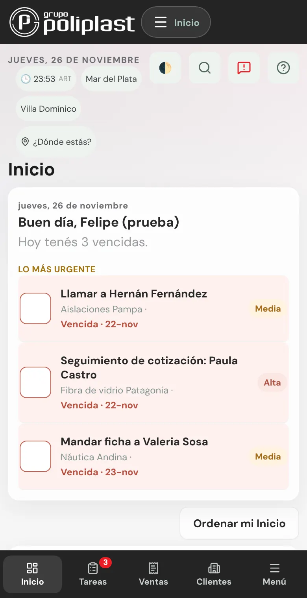
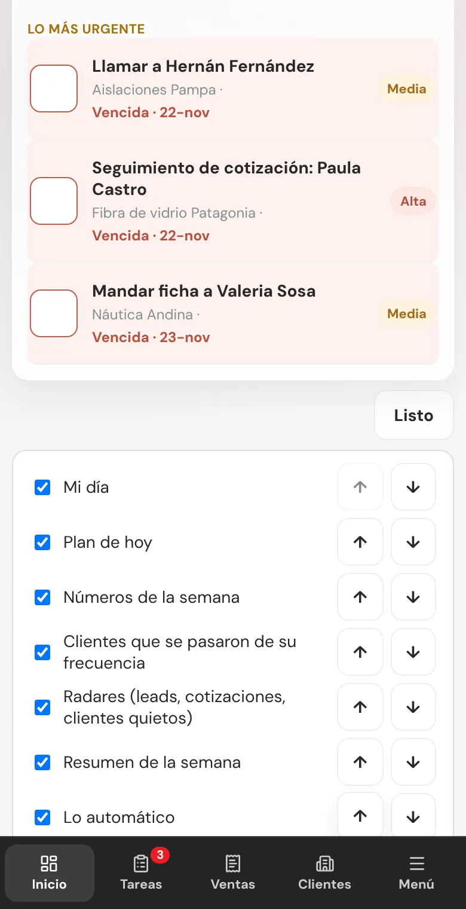
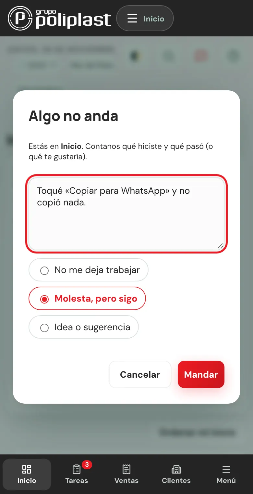
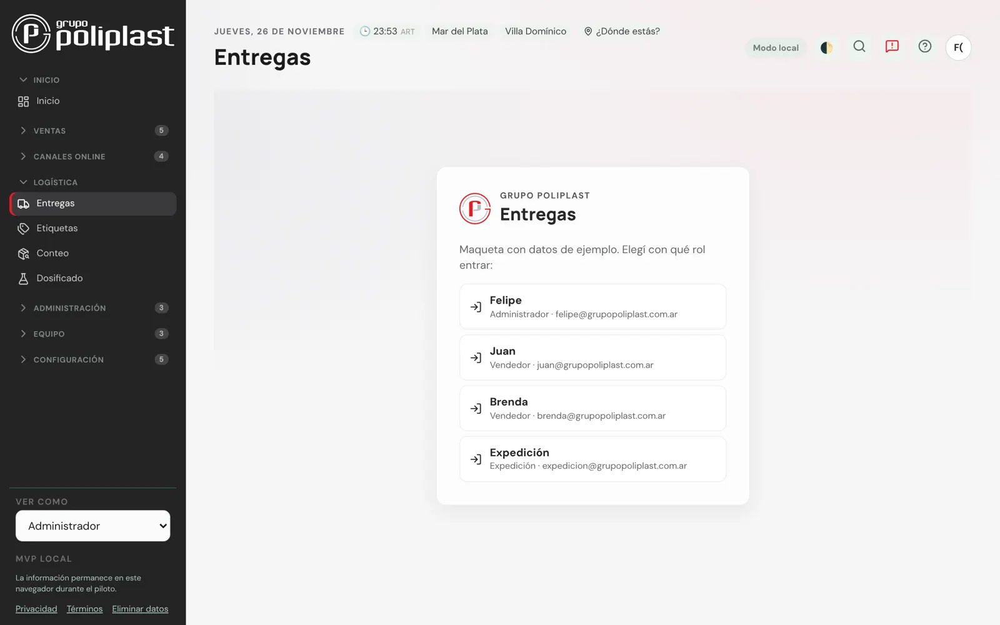
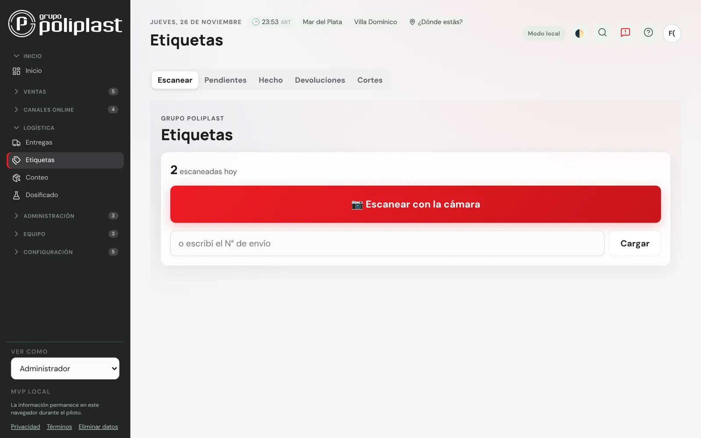
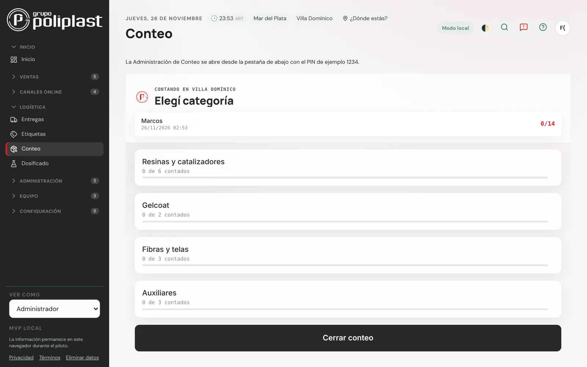
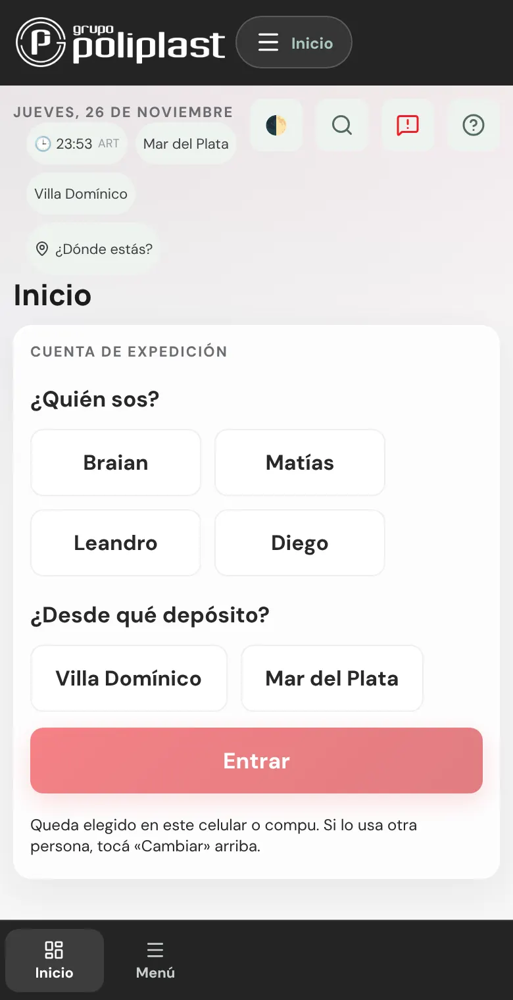
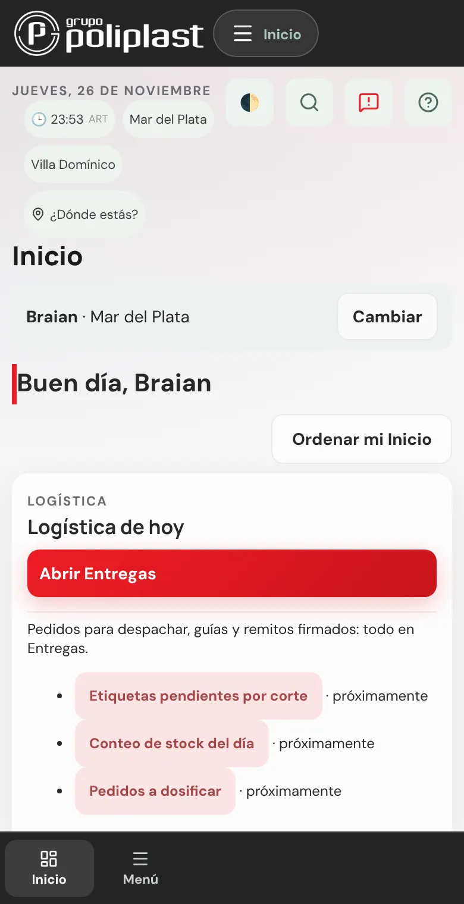
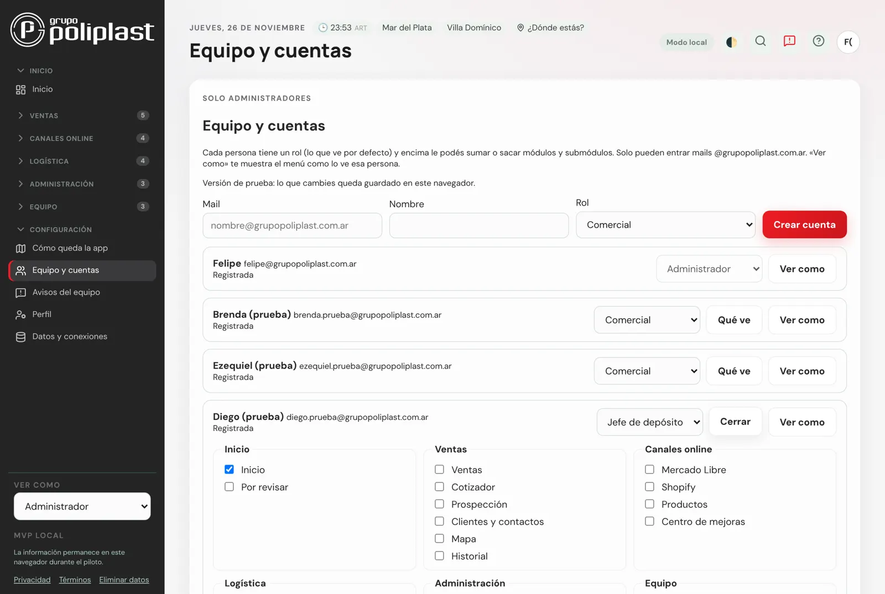
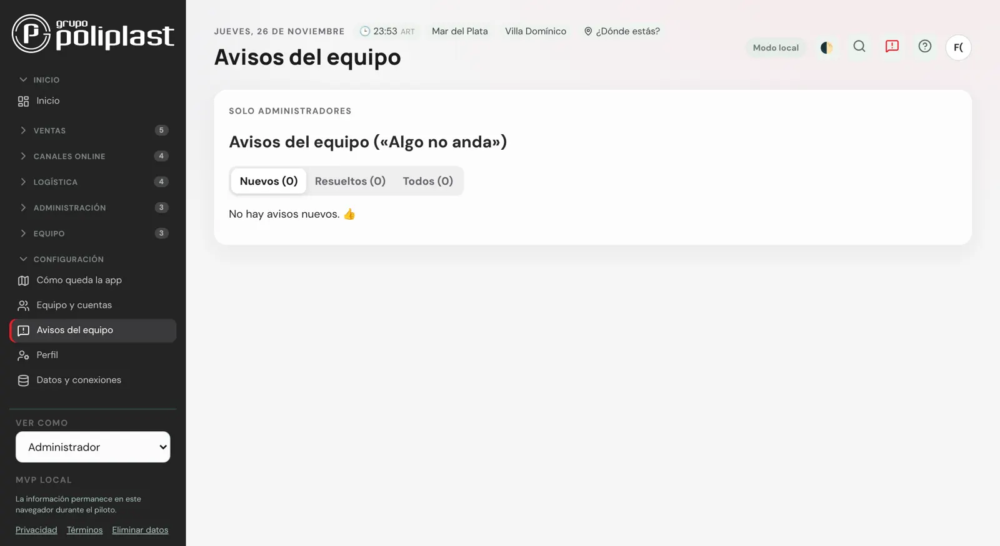

Grupo Poliplast
Grupo Poliplast
Qué ve cada uno
Cada persona tiene un rol. Felipe le puede sumar o sacar módulos a cada uno.
- Comercial Ventas, Cotizador, Prospección, Clientes, Mapa, Mercado Libre, Shopify, Productos, Entregas (vista de vendedor), Tareas y Academia.
- Jefe de depósito Logística completa: Entregas, Etiquetas, Conteo y Dosificado. Sin datos de ventas.
- Expedición Una cuenta compartida: al entrar elegís quién sos y desde qué depósito. Entregas, Etiquetas, Conteo y Dosificado.
- Administración Clientes, Recibos, Facturación, Compras, Entregas y Tareas.
Para todos
🏠InicioTu día, ordenado a tu gusto›
Arriba ves lo urgente. Abajo, tarjetas según tus módulos (expedición no ve tarjetas de ventas).
Ordenar mi Inicio
- Tocá Ordenar mi Inicio.
- Subí o bajá cada tarjeta con las flechas.
- Destildá las que no querés ver. Queda guardado en tu cuenta.


⚠️Algo no andaAvisar un problema o una idea›
- Tocá el ícono ⚠ arriba a la derecha.
- Contá qué hiciste y qué pasó.
- Elegí: No me deja trabajar, Molesta pero sigo o Idea. La app manda sola en qué pantalla estabas y si era celular o compu.

✨El asistentePreguntale lo que necesites›
El botón redondo de abajo a la derecha. Te ayuda a usar la app y responde sobre productos. Solo usa los datos de tus módulos: si no tenés Ventas, no te va a contestar cuánto compró un cliente.
Ventas
🧮CotizadorPrecios en dólares, minorista y mayorista›
- Elegí el cliente (o escribí el nombre).
- Elegí Minorista o Mayorista.
- Buscá el producto por nombre o SKU y poné la cantidad: el precio sale de la lista vigente y del tramo por cantidad.
- Elegí la forma de pago.
- Copiar para WhatsApp arma el mensaje con el total en USD y en pesos (dólar BNA).
Debajo de cada producto ves cuánto sale en Mercado Libre y en Shopify, para comparar. Si es mayorista de Penosil, te avisa si no llegás al mínimo (USD 1.800 neto). Una cotización no es una venta: no se carga en Ventas. «Coticé hoy» deja la marca en la ficha del cliente.
📋Ventas, Prospección y ClientesLo de siempre del CRM›
Funcionan igual que en el CRM: cargar ventas, la Cola del día para contactar, las fichas de clientes con su historial de Contabilium y el mapa. La guía detallada sigue en la guía del CRM.
Logística
🚚EntregasPedidos, expedición, calendario›
Es la Entregas de siempre, ahora adentro de la app. Los vendedores cargan el remito; expedición imprime, despacha, sube la guía y firma el remito en el celular.

🏷️EtiquetasMercado Libre: escanear y devoluciones›
- Escanear: escaneá la etiqueta al preparar. Avisa si ya estaba o si el envío se canceló.
- Pendientes: lo que falta por corte (8, 10 y 12).
- Devoluciones: escaneá la etiqueta de vuelta y anotá el estado de cada producto.

📦Conteo y DosificadoStock del depósito y químicos›
Conteo: elegí la categoría y cargá lo contado. Dosificado: kits químicos, solo cantidad. Los dos con el nombre y el depósito que elegiste al entrar.

👤Cuenta de expediciónUna cuenta, varios usuarios›
- Al entrar, tocá tu nombre y el depósito.
- Arriba queda «Tu nombre · Depósito». Si agarra el celular otro, toca Cambiar.


Solo administradores
🔑Equipo y cuentasQuién entra y qué ve cada uno›
- Crear cuenta: mail @grupopoliplast.com.ar, nombre y rol.
- Qué ve: tildá o destildá módulos y submódulos de esa persona.
- Ver como: mirá la app como la ve esa persona antes de dársela.

📬Avisos del equipoLo que mandaron con «Algo no anda»›
Nuevos arriba, con quién lo mandó, en qué pantalla y si era celular o compu. «Marcar resuelto» cuando está arreglado.
